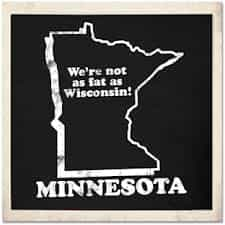

Mikael holds a BA in English Literature with a writing emphasis and also holds a Minor in History. He focuses most of his attention towards physical fitness, sports, small town game, and self improvement.


Lately I’ve noticed that there’s a negative in the manosphere. We’ve been posting a lot about why American women suck, and why certain cities in America suck. Well I figured it was time to pump in a bit of life to show that not all is lost in America. Luckily I didn’t have to look beyond where I’m currently residing, the Twin Cities. Now I don’t want to be a proponent of supporting the Twin Cities just because I reside here; however there’s enough factual evidence to back up my claim.
Travel and Leisure ranks Minneapolis/St. Paul as the no. 10 for city with the most attractive people. The only cities that beat out the Twin Cities are places in the southern half of the United States where winter doesn’t exist. Of those places south of the border, most are directly linked to a beach. When you factor in Minnesota being winter half the year, and only having access to 10,000 lakes, it’s pretty impressive.
The country’s largest mall, this place has endless possibilities and advantages. Primary advantage one, is the fact that there’s no sales tax on clothes here. That means you have tons of options under one roof for a good wardrobe, and you never pay tax on it. Advantage number two, is the opportunity for gaming women, no matter what age. Being it’s as large of a mall as it is, anyone from high school through their 40’s can run game here and find plenty of opportunities. Additionally, it’s a fair tourist destination so whether you’re a local, or visiting, you still have a fair opportunity to find something that will work.
Albeit not the most successful teams, there are plenty of teams based here which provides plenty of options for the sports fan who wants to catch a game. The advantage to the teams not having a great history comes in the cheap ticket pricing. Plus if you like hockey, well it’s the state of hockey. Options include, NFL, NHL, NBA, MLB, WNBA, professional lacrosse, and professional soccer.
Now I realize a lot of people on here aren’t big fans of marriage, however the discussion often comes up that people hate marriage because there’s no one worth marrying, and every marriage ends in divorce. That’s true, except in Minnesota for some reason people get married, often and young, and they stay together. Honestly when I first moved here I felt like I hit a time warp and ended up in the 1950’s with women who cook and clean but no, it’s just Minnesota. Good to know that there’s still a foothold where feminism hasn’t ruined everything in this country.
Since there’s a good following of people on this website that like to view statistics for proof here’s a few simple statistical facts. The ratio of men to women is slightly in favor of men for Minneapolis showing 100 men to 103 women. St. Paul is comparable, with 100 men to 107 women. While a 1 to 1 ratio isn’t the best, compared to places like DC and Portland, this is a dream. If you’re curious about how old people are in the Twin Cities, as well as how much they make, well that’s listed as well. Age can be broken down as men being approximately 34 years old and women 35.5 years of age. Overall that means this is a pretty young city in the grand scheme of things. The average household income is over $50k for both cities. It’s not the highest, but the cost of living isn’t much here either.
According to Forbes, the Twin Cities is the healthiest place in America right now. What does that mean? Well as a guy you have to hit the gym if you want success. But that also means that the woman you pick up is likely to take care of herself and be in shape as well. If you visit the neighbors to the east first you’ll see a tremendous difference in appearance.

Lastly, what every man loves, food. The Twin Cities are home to the beastly manburger known as the Jucy Lucy, a cheeseburger with the cheese inside. That’s not all though. Altogether the Twin Cities have had over 40 restaurants featured on various television shows, all due to their delicious menu items.
And just in case those reasons weren’t all enough, the Twin Cities are currently ranked number 11 in Best Cities for Men in 2013 according to Men’s Health. So there you have it, a place in America that’s still pretty awesome. It’s got money, food, women (both looks and ratio) and the countries largest mall. And of all places, it’s in the Midwest.